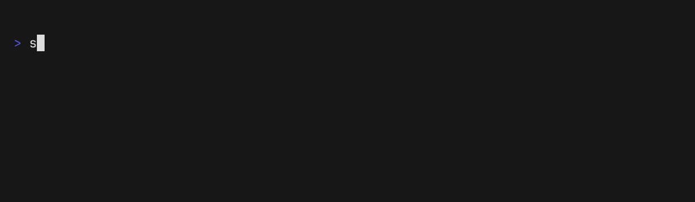
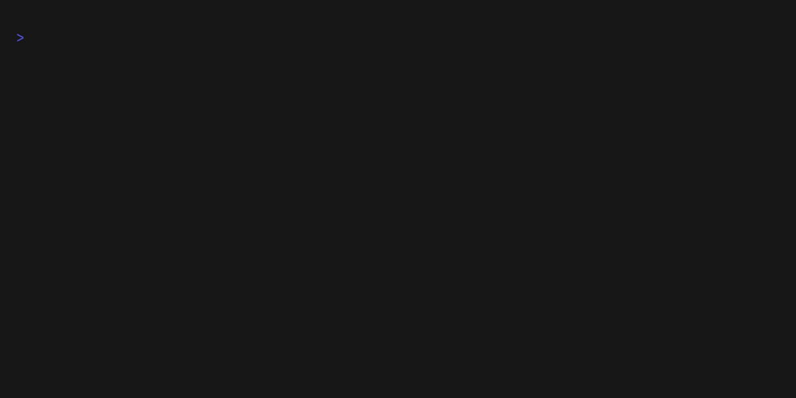

Usage¶
SeReTo provides a command line interface (CLI) to help you create and manage your projects. After you have set it up, you can continue with the following steps.
Getting help¶
Any time you are unsure about anything, or cannot remember a command structure, you can always check the command's help:
sereto --help
You can also use help in the nested commands. For example, if you would like to know, what you can do with the dates in your project's configuration, you can run:
sereto config dates --help
Create project¶
To create a new project using SeReTo, you can use the new command. The command takes a unique identifier for the project as a positional argument. For example, to create a project with the identifier TEST, you would run the following command:
sereto new TEST
During the creation process, you will be prompted with questions about the project, such as its name. Please provide the necessary information when prompted.
Please note that the project identifier should meet the following requirements:
- It can only contain letters (
a-zA-Z), numbers (0-9), underscore (_), dash (-), and dot (.). - It should be between 1 and 20 characters long.
For more information on the new command, you can refer to the SeReTo CLI documentation.
List projects¶
You can see the list of all projects using the following command, which will show you the ID and name of the project, as well as the location of the project's file structure:
sereto ls

Configuring the project's details¶
SeReTo will need some information from you to generate the project. In our example, please change your working directory to your project's directory (you can discover it by running sereto ls). It can look something like this:
cd projects/TEST
Now you can change the project's configuration. You should set up the dates, targets and people for the project.
To view a summary of the current configuration, you can run:
sereto config show
Dates¶
Run the following command:
sereto config dates add
SeReTo will ask you which date you would like to configure:
- sow_sent = date when you will be sending your Statement of Work
- pentest_ongoing = pair of dates indicating when the assessment will be performed
- review = date when the review is going to be done
- report_sent = date when you will be delivering the report to your customer
You then set the dates using the format DD-Mmm-YYYY, such as 18-Apr-2024.

Run this command multiple times for each type of date you would like to set.
Targets¶
Run the following command:
sereto config targets add
SeReTo will ask you about some details you would like to set. Make sure to include all necessary details, such as target locators, source IP addresses (src_ips), etc.
Example locators configuration:
"locators": [
{"type": "url", "value": "https://example.com/"},
{"type": "ip", "value": "192.0.2.0", "description": "Example target IP address"},
]
Run this command multiple times for each target.
People¶
Run the following command:
sereto config people add
SeReTo will let you choose the role (type) and details of the person you are currently setting.
Run this command multiple times for each person you would like to set.
Adding findings to a target¶
The findings TUI allows you to add findings for a target in an interactive way. To start it, run the following command:
sereto findings add
To exit the TUI at any point, press Ctrl+Q.
The TUI utilizes fuzzy search to help you effectively locate the desired finding templates. You can filter the list by selecting specific categories and by searching for a finding’s title and/or keywords.
Once you select a finding, a scrollable preview is displayed. Pressing A opens a screen where the details of the findings can be filled in. It is required to enter the finding name, choose a target to which the finding will be added and specify all required variables from the template (e.g. image proof). After confirmation, the finding will be added to the specified target.
Once a finding is added, it is included in the findings.toml file of the target and a corresponding .md.j2 file is created in the findings directory of the target. The .md.j2 file is a Markdown Jinja template that should be edited to include specific details about the finding.
Editing the finding template¶
findings.toml¶
When you add a finding from the TUI, the file findings.toml in the target's directory, e.g. target_dast_example_target, is updated. It may look as follows:
["Remote code execution"]
risk = "critical"
findings = ["generic_test_finding"]
The Remote code execution is the name of the finding group, risk is the risk level of the finding group, and findings is a list of one or more nested findings that belong to the group. Specifying the risk for a group is optional. If not specified, it defaults to the highest risk within the finding group.
Finding file¶
The entry generic_test_finding depends on the template chosen from the TUI. In this case, it refers to a generic finding template.
The corresponding file is created in the findings directory of the target. The resulting project structure may look like this:
├── config.json
├── includes
├── layouts
├── outputs
├── pictures
└── target_dast_example_target
├── findings.toml
├── findings
│ ├── _base.md
│ └── generic_test_finding.md.j2
...
The file generic_test_finding.md.j2 is a Jinja template that will be used to generate the report section for the given nested finding.
You can rename the finding file to better reflect the nature of the finding, e.g. rce.md.j2. Remember to update the corresponding entry in the findings.toml file so that it matches the new filename, e.g.:
["Remote code execution"]
risk = "critical"
findings = ["rce"]
Individual findings may require you to fill in extra information, such as screenshots, which will be used to customize the finding in automated way. Specify these in the frontmatter of the template file, which is a section at the top of the file enclosed between +++ lines.
The frontmatter is written in TOML and contains the following fields:
name- name of the finding (only used if there are multiple findings in the group)risk- risk level of the finding (info,low,medium,high,critical)category- category of the finding (e.g.generic,dast,sast, etc.)template_path- path to a template file that the nested finding file is based on (relative to thetemplates_pathsetting)locators- list of locators that indicate the location of the finding within the target, e.g. URLs, IP addresses, etc. Each locator is defined by an inline table with the following fields:type- type of the locator, e.g.url,ip, etc. List of all locator types can be found in the model reference.value- value of the locatordescription(optional) - description of the locator
Lastly, the frontmatter contains a TOML table variables, where the variables required by the finding can be defined.
Example frontmatter:
+++
name = "Remote code execution"
risk = "critical"
category = "generic"
template_path = "categories/generic/findings/test_finding.md.j2"
locators = [
{
type = "url",
value = "https://example.com/vulnerable-endpoint",
description = "Vulnerable endpoint"
},
]
[variables]
images = ['proof.png']
+++
The main finding variables, such as locators, can be accessed in the template using the f object, e.g.:
{% for loc in f.locators %}
- {{ loc.value }}
{% endfor %}
For getting only a specific locator type, you can use the f.filter_locators method, e.g.:
{% for url in f.filter_locators("url") %}
- <{{ url.value }}>
{% endfor %}
The variables table can be accessed using f.vars, e.g.:
{% for image in f.vars.images %}

{% endfor %}
The finding should be an extension of the base template named _base.md.j2. The base template provides the following blocks that you can override to customize the content of the finding:
descriptionlikelihoodimpactrecommendation
In its simplest form, the finding file may look like this:
+++
name = "Remote code execution"
risk = "critical"
category = "generic"
template_path = "categories/generic/findings/test_finding.md.j2"
locators = [
{
type = "url",
value = "https://example.com/vulnerable-endpoint",
description = "Vulnerable endpoint"
},
]
[variables]
images = ['proof.png']
+++
{% extends "_base.md" %}
{% block description -%}
A brief description of the finding.
URLs:
{% for url in f.filter_locators("url") -%}
- <{{ url.value }}>
{% endfor %}
Image proof:
{% for image in f.vars.images -%}

{% endfor %}
{%- endblock description %}
{% block likelihood -%}
Likelihood of the finding being exploited.
{%- endblock likelihood %}
{% block impact -%}
Potential impact of the finding.
{%- endblock impact %}
{% block recommendation -%}
Recommendations or fixes for the finding.
{%- endblock recommendation %}
{% block reference -%}
References and links (e.g. to documentation) related to the finding.
{%- endblock reference %}
Report generation¶
To generate the report PDF, you can use the pdf command:
sereto pdf report
To open the generated report, you can use the open command:
sereto open report
In case of an error, check the .build/report.log file in your project's directory. It contains the output of the report generation process, including any errors that may have occurred.
To remove auxiliary files generated during the report build, run:
sereto clean
Alternatively, you can manually delete the .build directory from your project's root.